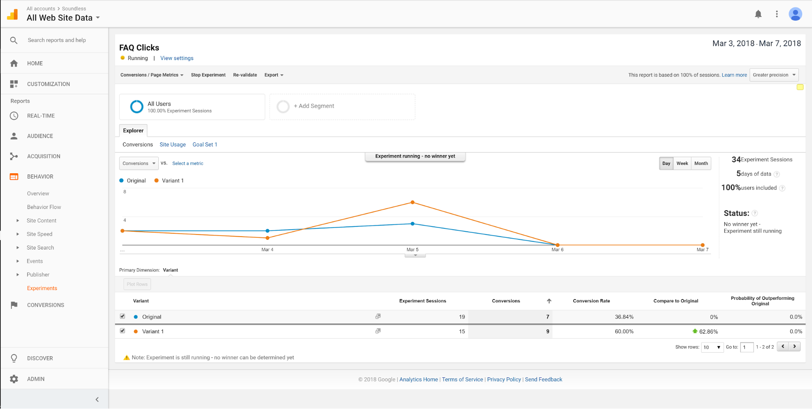

Sound Less
As we grow older, our hearing abilities naturally worsen and the spectrum of frequencies we perceive begin to narrow. Humans naturally flinch and try to protect their ears in reaction to loud and startling noises. However, extended exposure to loud but tolerable noises in settings or recreational activities such as practicing at a shooting range, riding a motorcycle, or listening to music at a concert can lead to hearing loss.
By providing diagnostics based on auditory input from your surroundings, Soundless enables people to determine whether surrounding noises are detrimental or not, along with getting advice on how to further prevent noise induced hearing loss.
Roles: Researcher, visual designer, web developer
Skills: Needfinding, user interviews, storyboarding, wireframing, rapid prototyping, visual design, web development
Resources: Live prototype, repo
Date: Jan - Mar 2018 (10 weeks)
Teammates: Vivian Ta, Alexander Chen
Needfinding
We interviewed 3 people who work in or inhabit potentially loud environments and observed 1 of them in an environment (specifically, a music recording room) that we assumed had a loud setting for 15 minutes each. We asked them questions to assess the type and intensity of their respective loud environment and observed how they reacted to it. In doing so, we learned that people in loud settings either:
- do not know the environment they are in is potentially harmful to the ears or
- are aware the space they are in is relatively loud but tolerate or prefer the volume level because they get used to it after prolonged exposure.
We then used the data to frame our problems into:
- How can we inform users that are unaware of dangerous sound levels to prevent damage to their ears?
- How can we convince users that are aware of but tolerate dangerous sound levels to want to prevent damage to their ears?
Storyboards
Using the data we collected, we tried to address the two types of users and explore potential solutions by making 3 storyboards. The storyboards explored 3 types of solutions:
- notifications when sound levels exceed recommended amount or duration
- receiving a daily score on your approximate sound health and steps to improve
- a hearing diagnostic to gauge current ear health by playing playing different frequencies
View all storyboards here.
Rapid Prototyping + Pivot
When making our paper prototypes, we had icons to represent the different features that the app could do. After having participants walk through some use cases, it made sense to add text to the icons since the icons on their own, especially when hand drawn, were not intuitive enough. Users mentioned that the features between the different prototypes could complement each other since they both promote better ear health.
Since our section's topic was 'Sound' Feedback, we also received feedback to try to better incorporate this into the product overall. Thus, we decided to produce noises during walkthroughs in order to facilitate sounds guiding the user when noises were harmful.
View all paper prototypes here.
Wireframing
Next, we made wireframes to reflect the changes, compound all the features, and visualize the flow of the app.


View all wireframes in Figma here.
Prototype
We made a development plan and spent the next 3 weeks making an HTML prototype then a more stylized one after. Instead of mostly JSON data, our app used a sound recording API to receive user input through microphones.
Users receive warnings after a certain amount of time to simulate what receiving a notification of dangerous noise levels would be like. On the Data page, input from a microphone is recorded and is displayed on a graph when the user view live updates of their current environmental sound levels. Another core interaction is the Diagnostic page, in which a user answers questions and is able to get an estimated status on his or her ear health. Furthermore, the Notifications page saves warnings received for users to reference in case they are interrupted while receiving a notification.
User Testing
We picked people who went to concerts or regularly listened to music or audio and had them go through our app's use cases and core functionalities. We found that:
- a lack of descriptions would reduce confusion for each page's purpose
- JSON data messages on the Warnings page kept interrupting prototype testing flow
A/B Testing + Google Analytics
For our A/B testing, we chose to add a “Recommend” button to an alternate version because we’ve noticed that there are some users who only like to engage in buttons vs. having to write comments or even questions. In our Design A, we included a Recommend button below the questions and answers submitted on the forum, to allow users to upvote questions and answers to stimulate engagement in the FAQ page that we didn't see in user testing. In our Design B, we removed the recommended button and just included the question and answer on the FAQ page.
With df = 1 and p < 0.05, our statistic (1.74 < 3.84) does not make it to the .05 level. With a chi squared value of 1.74, we can only fail to reject the null hypothesis. Thus, we cannot say that the original design with only the “Add Question” button portion is better than the design with a “Recommend” button added on the FAQ page.
Design B was our design of choice based on our A/B testing. Design B had a 23.46% higher conversion rate with two more conversions than Design A. One explanation for Design B’s success is that the “Recommend” button is an easy and low cost way to engage with the page and does not require the user to scan multiple questions to contribute. It may also have been more engaging through the communal feel of interacting with another user's content. In comparison, Design A required users to use more cognitive resources and examine the questions posted in the application and spend time typing out a question that has not been asked yet.
Final Prototype
View the final prototype here.
Post Mortem
Received "Best UI/Visual Design" out of the 200+ students and other awards.
Judges in attendance: Jon Kies (Qualcomm), Arlene Harris (DYNA, LLC.), Gad Shaanan (YOFiMeter), Chuck Pelly (Intersection-Inc.), Magaly Drant (ServiceNow Inc.), Jamie Lee (Viasat), Tracie Davee (Viasat)